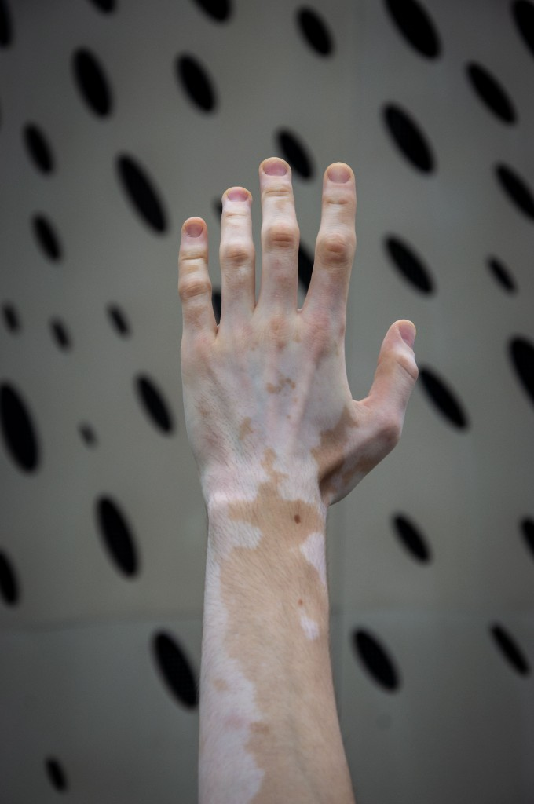
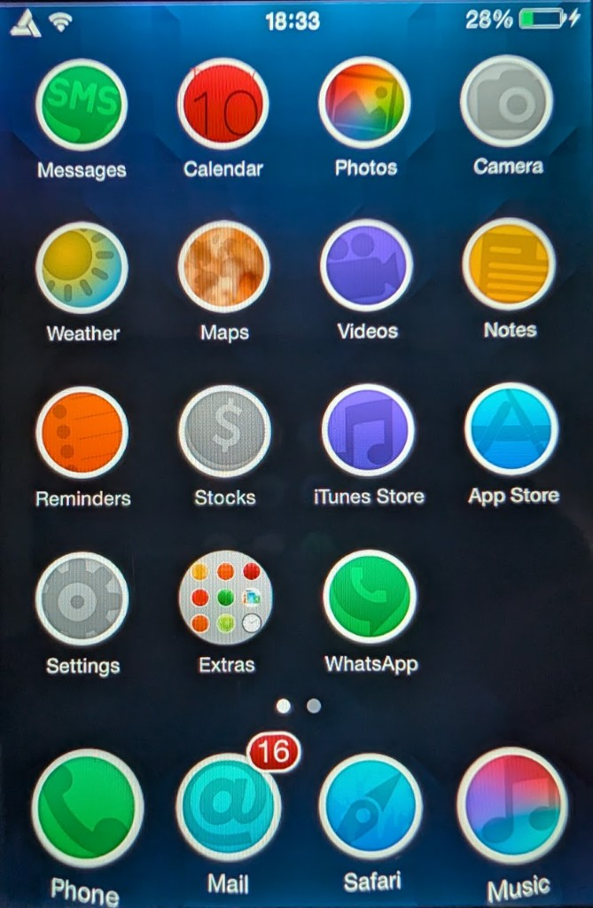
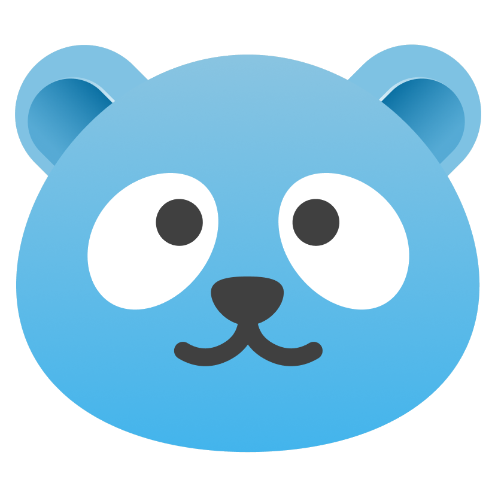

FULLY CUSTOMIZABLE
From layouts and docks to icons, animations and gestures — shape your Android experience the way you want.
ANDROID, WITHOUT THE BORING PART.
ReversePanda is an Android launcher built for people who don't do defaults. Change layouts, docks, gestures, animations and almost everything in between.
WHY REVERSEPANDA
Start with Android. Make it yours. Change how your home screen looks, moves and works with layouts, docks, gestures, icons, animations and more.
From layouts and docks to icons, animations and gestures — shape your Android experience the way you want.
Explore different layouts, transitions and animations designed to make your home screen feel alive.
Fine-tune ReversePanda through a settings system designed to give you control without getting in your way.
YOUR WAY
DEEP CUSTOMIZATION
NO ADS
JUST THE LAUNCHER
100%
MADE FOR ANDROID
MAKE IT YOURS
Same launcher. Completely different setups. Build a home screen that feels like yours.
GO DEEPER
ReversePanda doesn't stop at presets.
Choose how individual parts of your launcher look, move and behave.
Choose how apps are arranged and how you move through your home screen.
CLASSIC PAGINATED / CONTINUOUS CANVAS / BUBBLE CLOUD
THE REVERSEPANDA WAY
Android gives you a home screen. ReversePanda gives you yours.
THE STORY
01
The name ReversePanda is more personal than it might seem.
I have vitiligo, including white patches around my eyes. At some point, I realized it was almost the reverse of a panda's black markings.
ReversePanda stuck.
Something that makes me different became the name of something I created.

02
I've always liked making technology feel like mine.
One of the earliest examples was my jailbroken iPod Touch. I spent hours exploring Cydia, trying tweaks and changing things that were never meant to be changed.
Different layouts, animations, interactions — sometimes useful, sometimes completely unnecessary. I just loved seeing what was possible.
That curiosity never really went away.

03
Years later, Android gave me the freedom to take that curiosity much further.
ReversePanda started as a way to build the kind of launcher I wanted to use myself — one where layouts, docks, gestures, animations and small details aren't simply decided for you.
It's still growing, still changing and probably never going to be completely normal.
Which is kind of the point.

YOUR PHONE.
YOUR RULES.
YOUR TURN
ReversePanda is still growing.
If you like changing the things you're usually told to leave alone, you're probably in the right place.
JOIN THE BETA